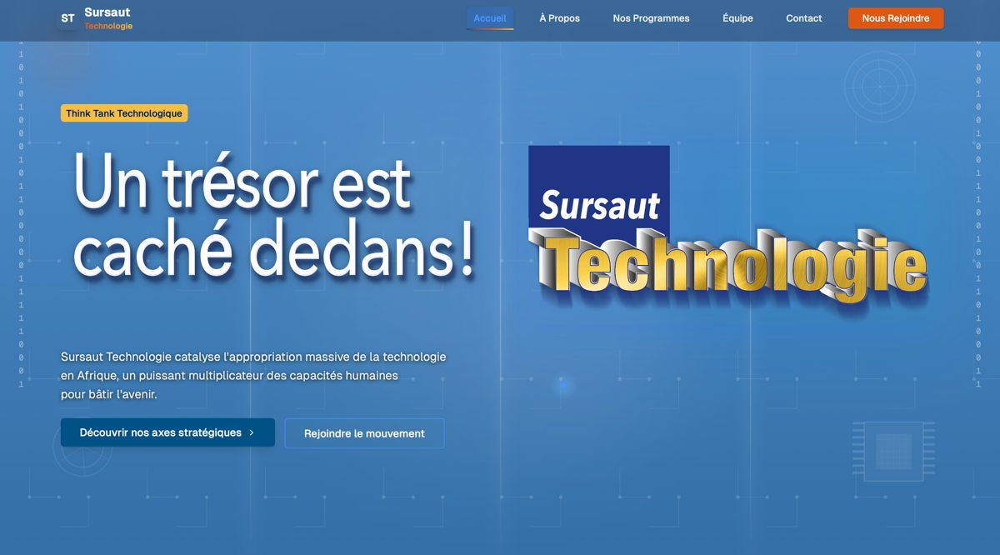
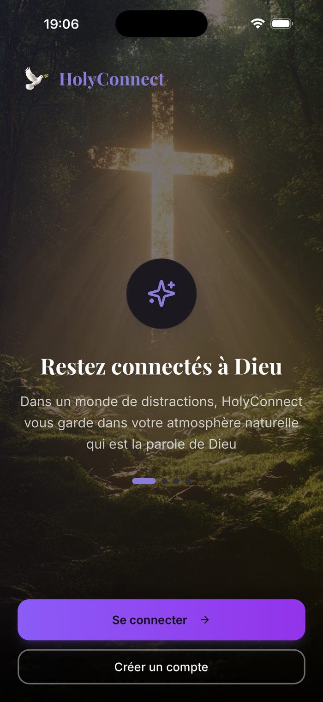

Comprendre l'esprit, révéler le potentiel,
bâtir un avenir meilleur.
Qui je suis
Je suis Malika Fofana, Ingénieure en IA & Data, passionnée par la manière dont la technologie peut transformer une idée en une solution concrète.
Mon parcours s'est construit autour d'une conviction simple : la technologie prend toute sa valeur lorsqu'elle répond à un véritable besoin. Au fil de mes expériences, j'ai exploré des domaines variés, de l'intelligence artificielle et l'analyse de données au développement logiciel, en passant par l'automatisation, le traitement du langage, l'OCR et la blockchain.
J'aime intervenir à chaque étape d'un projet : comprendre un besoin, explorer les données, concevoir une solution, la développer et la rendre réellement utile. Avec plusieurs cordes à mon arc, je peux croiser différentes compétences et approches pour m'adapter à chaque problématique et transformer des idées ambitieuses en produits concrets, utiles et utilisés.
Ma manière de travailler
Comprendre en profondeur avant de construire.
Transformer des données et des problématiques complexes en solutions structurées.
Explorer différentes approches pour dépasser les solutions évidentes.
Privilégier les technologies qui répondent à des besoins réels.
Ce qui relie la conception à la mise en production.
De mes premières lignes de code à la conception de solutions intelligentes.
Lycée Jules Verne · Abidjan, CI
Mon parcours scientifique commence avec un Baccalauréat Général obtenu avec la mention Très Bien et 17,21 de moyenne, avec pour spécialités Numérique et Sciences de l'Informatique, Mathématiques, et Physique-Chimie.
Cette formation m'a donné mes premières bases en programmation, raisonnement logique et résolution de problèmes, tout en développant une approche rigoureuse fondée sur l'observation, la formulation d'hypothèses et l'analyse des résultats.
Aivancity, School of AI & Data · Paris, FR
Formation à Aivancity, dans un domaine à la croisée de la data, de l'intelligence artificielle et du développement technologique, au sein d'une école reconnue par le MESR et classée 1ʳᵉ école spécialisée en IA & Data par Eduniversal.
Un programme qui couvre l'ensemble de la chaîne de valeur de la donnée : collecte, analyse, modélisation, intégration, ainsi que des enjeux transverses comme la cybersécurité, l'éthique de l'IA, l'IA agentique et la robotique. De nombreux projets pratiques sur des secteurs variés, ainsi que des voyages d'études, notamment au Maroc, m'ont permis de développer ma curiosité, mon ouverture et ma capacité à travailler dans des environnements différents. Major de promotion depuis 2023.
Ba&sh · Paris, FR
Découverte concrète de l'analyse de données dans un contexte retail, à travers l'étude des retours clients.
Contributions
Puissance de Femmes · Paris, FR
Automatiser la collecte pour mieux exploiter la donnée.
Au sein de Puissance de Femmes, automatisation de la collecte de données à partir du web, afin de réduire les tâches manuelles et de faciliter la récupération des informations nécessaires aux projets.
Contributions
Orange Côte d'Ivoire · Abidjan, CI
Transformer la donnée en outils de pilotage.
Deux expériences successives au sein d'Orange Côte d'Ivoire autour de la data, de l'intelligence artificielle et du développement web, pour renforcer le pilotage financier et commercial de l'entreprise.
Groupe Image et Concept · Paris, FR
Faire dialoguer la voix et l'intelligence artificielle.
Projet de R&D consacré à la conception d'un système interactif combinant reconnaissance vocale, traitement du langage naturel et modèles de langage, pour une interaction plus naturelle avec la technologie.
Contributions
Sursaut Technologie
Sursaut Technologie est un think tank qui catalyse l'appropriation de la technologie en Afrique autour de trois axes : propulser les innovations à fort potentiel, accompagner l'éclosion des entreprises manufacturières et célébrer les novateurs.
Contributions

Kaufman & Broad · Paris, FR
Exploiter l'IA pour mieux comprendre les données territoriales.
Projet consacré à l'analyse de données territoriales, pour accompagner les problématiques liées à la planification urbaine.
Contributions
CraftAI · Paris, FR
Rendre l'information juridique plus accessible grâce à l'IA.
JurisIA est un assistant juridique basé sur les données de Légifrance, conçu pour permettre une interaction plus naturelle avec l'information juridique grâce à une architecture IA générant des réponses à partir de sources identifiables.
Contributions
Veltis · Paris, FR
Structurer la donnée pour la rendre exploitable et fiable.
Conception d'une plateforme de données cliniques destinée à centraliser et faciliter l'exploitation d'informations provenant de différentes sources, avec pour objectif de construire une base structurée et une interface permettant aux utilisateurs de rechercher, filtrer et exporter les informations nécessaires.
Contributions
Kaydan Technology · Abidjan, CI
IA, blockchain et automatisation au service de solutions métiers.
Au sein de Kaydan Technology, plusieurs problématiques technologiques combinant intelligence artificielle, développement full-stack, blockchain et traitement automatisé de documents.
Blockchain de vérification basée sur Hyperledger Fabric, avec architecture on-chain/off-chain et gestion des accès multi-organisations.
ATS full-stack (Node.js, TypeScript, React) avec portail candidat et plateforme RH interne.
Pipeline OCR d'extraction et de structuration automatique de données à partir de documents administratifs.
HolyConnect
Créer un produit de zéro, de l'idée au déploiement.
HolyConnect est un projet entrepreneurial autour d'une application mobile dédiée au partage et à la communion autour de la foi chrétienne, avec un rôle de fondatrice et Product Developer couvrant tout le cycle produit : vision, conception, développement, expérience utilisateur, tests et déploiement.
Réalisations
Définition de la vision du produit, des fonctionnalités et de l'expérience utilisateur.
Conception et développement de l'application mobile avec Next.js, Capacitor et Firebase.
Chatbot IA et moteur de recherche biblique intelligent.
Fil d'actualité et fonctionnalités sociales (publications, messages, stories).
Tests utilisateurs, publication sur l'App Store et Google Play, amélioration continue.

3 sem. entreprise / 1 sem. école
À la recherche d'une équipe pour approfondir mon expertise et contribuer à des projets IA & Data à impact… une alternance ou une collaboration ?
Cliquez sur une carte pour voir ce qu'elle couvre.